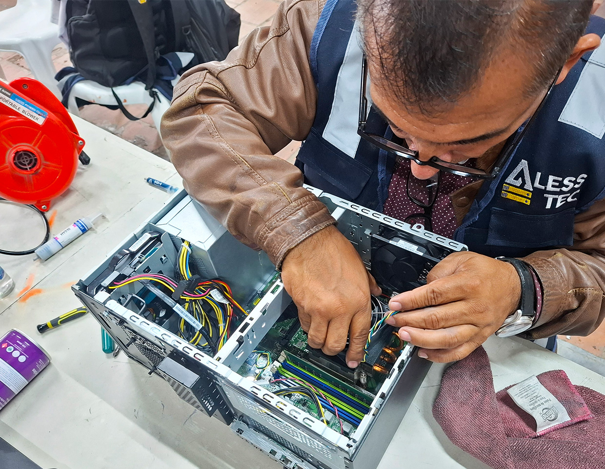

El mantenimiento de computadoras no es más que darle una checadita y una buena limpieza a la máquina de vez en cuando para que no te deje tirado a mitad de un trabajo, corra bien y te dure muchos años más sin andar fallando de la nada.
Gracias a ellas podemos tener computadoras que funcionen de manera eficiente y confiable.